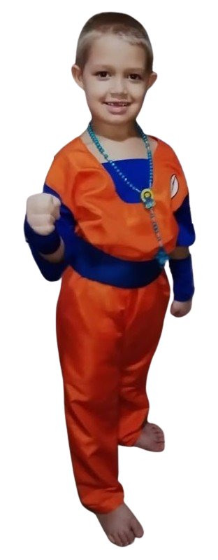
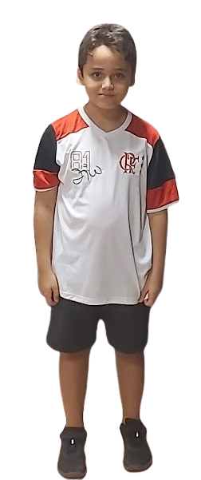

Miguel Pong Play
Player: Miguel
0
Player: Marcelinho
0
Use o mouse ou arraste o dedo na tela para controlar voce.
Ganha quem faz 5 pontos primeiro!
Jogar
Personalização
Escolha sua skin:
Padrão
Ninja
Escolha a bola:
Padrão
Bola de Fogo
Escolha o som de batida:
Som 1
Som 2
Aplicar
 
Reiniciar